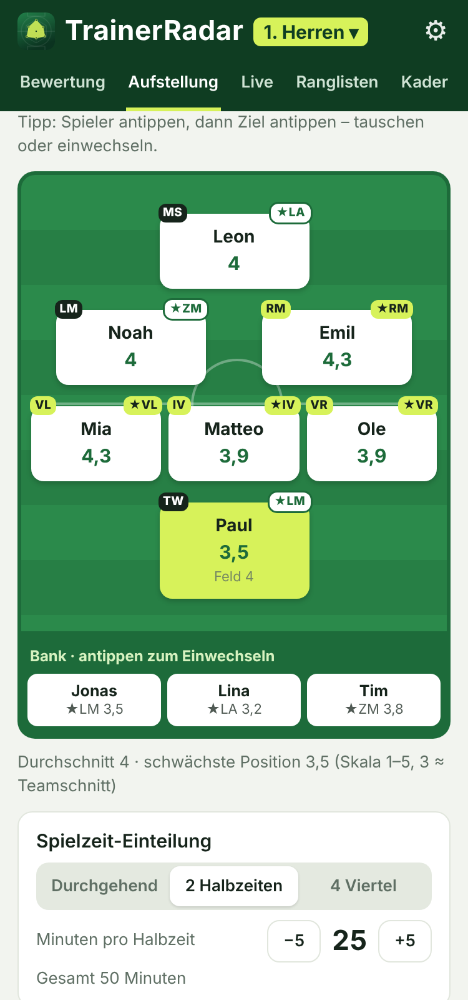
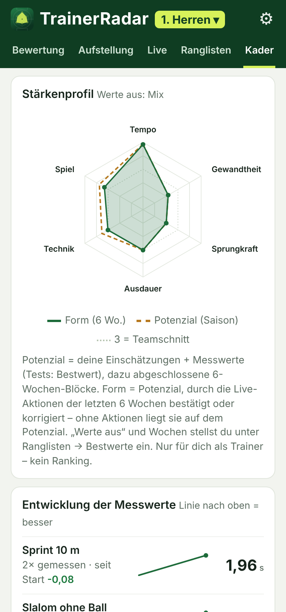
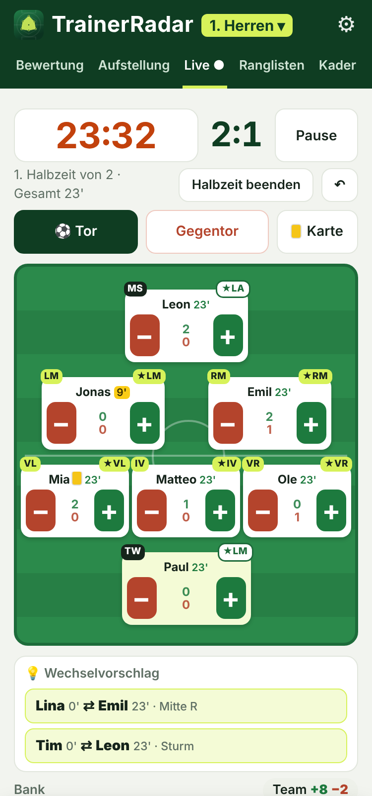

Kostenlos · für jede Mannschaft
Weniger Bauchgefühl.
Mehr Überblick.
Die Trainer-App für deine Mannschaft – von der Jugend bis zu den Senioren.



Aufstellung
Live-Erfassung
Stärkenprofil
Gerechtes StärkenprofilTrainerbeobachtungLeistungsmessungLive-Erfassung
Live am SpielfeldrandPlus & MinusTore & VorlagenKarten
Faire SpielzeitSpielzeit-AmpelWechselvorschlägeTurniermodus
Beste AufstellungStärkste ElfPositionsvorschlagFunino bis 11 gegen 11
Entwicklung im BlickPotenzial & FormZieleSaisonbericht
Fürs ganze TrainerteamMehrere MannschaftenTeilen per WhatsAppOffline
In 3 Schritten startklar
1QR-Code scannen
2Zum Home-Bildschirm
3Kader anlegen
✓ kostenlos ✓ ohne Anmeldung ✓ läuft offline ✓ Daten bleiben auf deinem Handy

cschwarte82.github.io/Wacker